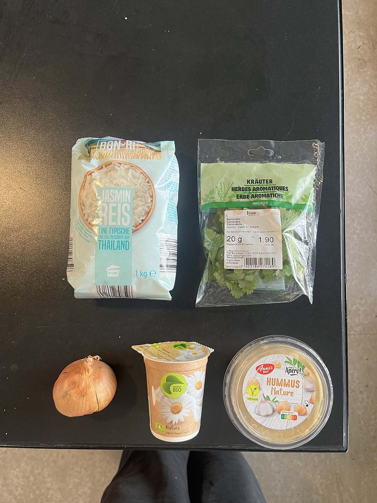
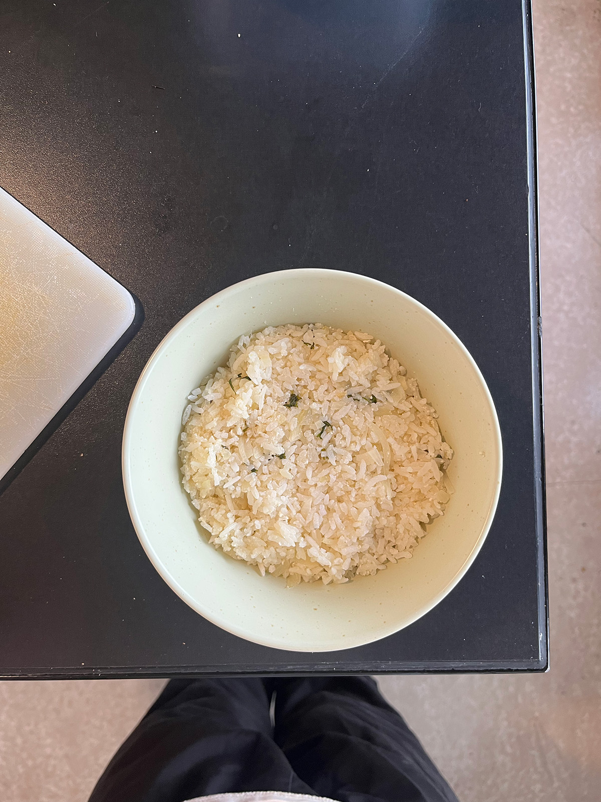
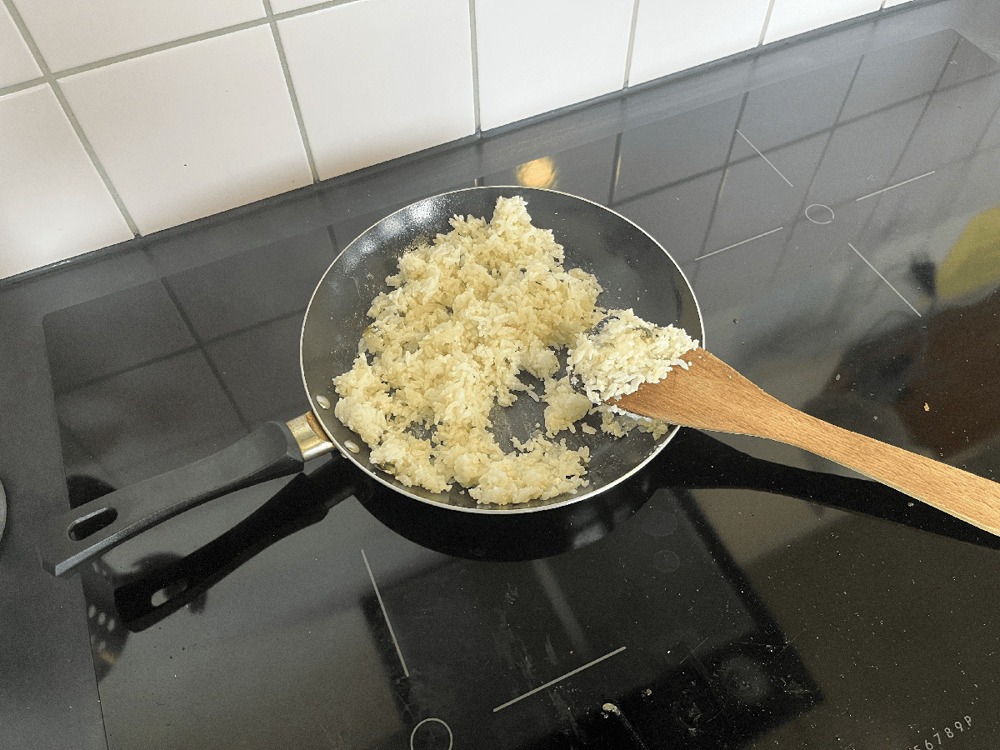
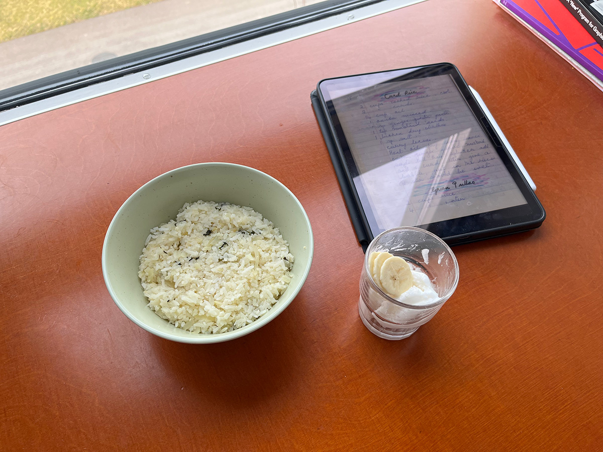
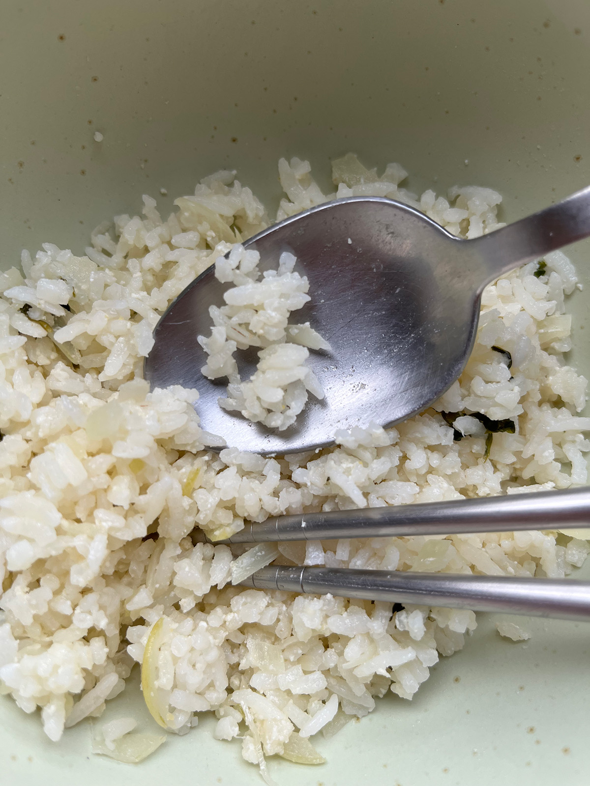
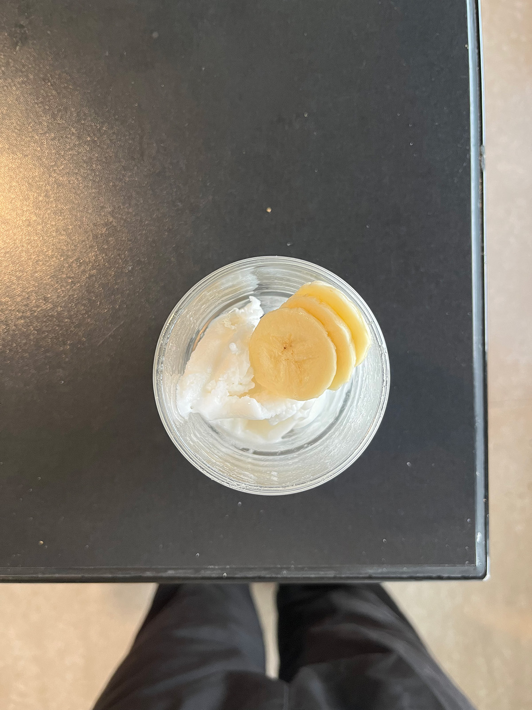
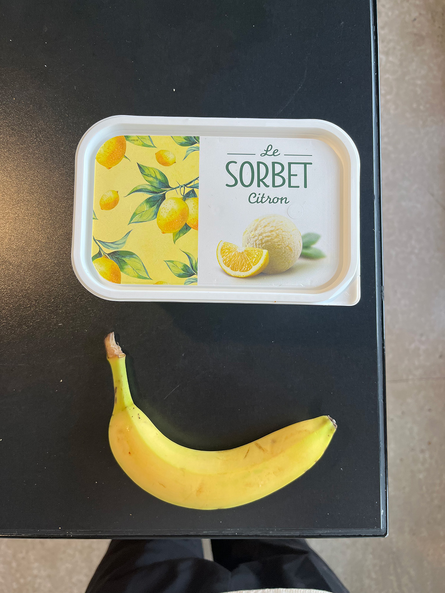
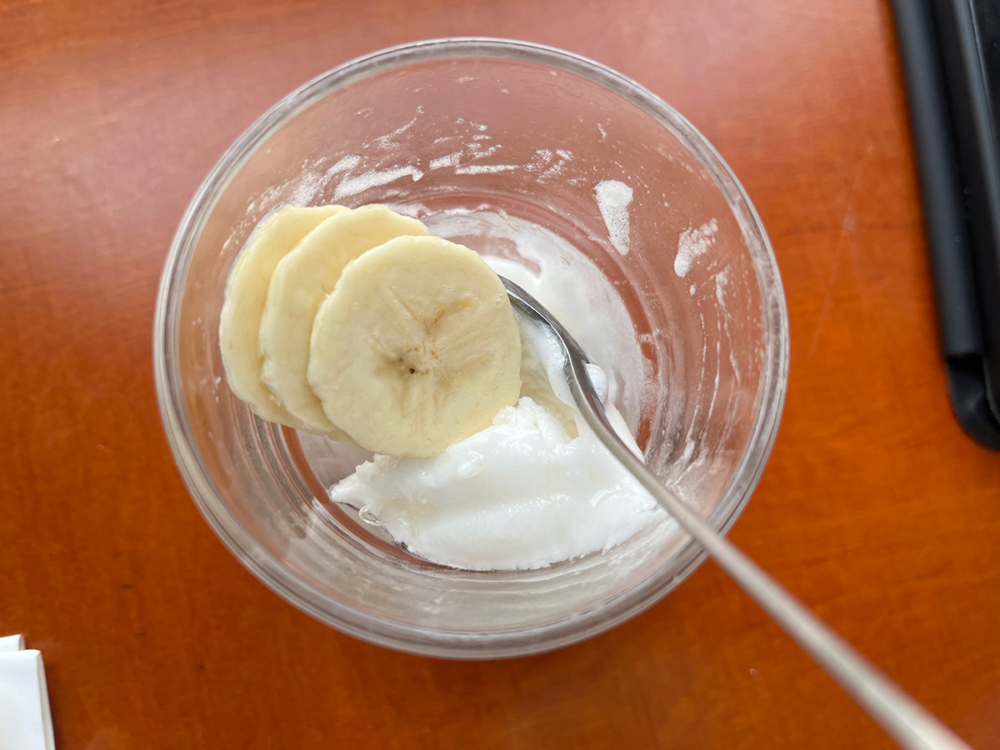

murmur
我在台灣的時候為了省錢都吃便利商店便宜的即期食品，所以沒什麼煮飯經驗、對口味也幾乎沒有要求或感覺。來這邊到目前為止的四個月幾乎都是煮麵或是微波食品，所以這次算是來瑞士後第一次真的自己煮飯，從備料上就挫折的偷工減料買了很多現成的。 在煮優格飯的時候從來沒聽過有人會熱優格，很怕會不會有可怕的事情發生、所以在緊張之下或許量加的不夠多、最後吃起來就只是好像略帶酸味的白飯、但也分不出來是不是哪個食材壞掉所以帶來的臭酸。 冰淇淋也因為沒有攪拌器所以放棄做香蕉冰淇淋、只切香蕉放在檸檬冰淇淋上，吃起來就和想像中的一樣。但這次吃的時候才想起來我很怕酸的食物，剛好這次兩道菜都是酸酸的，也讓一直自認為沒有味覺的我，好像被提醒原來自己還是一個有血有肉、有喜歡和害怕的味道的生物。 我有個朋友曾和我說他感到心煩意亂的時候就會去煮飯，因為至少你可以吃到你努力的成果，以前的我總是對於無法共感而感到疙瘩，雖然成品吃起來差強人意，但現在的我或許可以胸有成竹地對他說：沒錯、我也是這樣覺得的！
recipe
15
Curd Rice
2 cups cooked rice – cool
2 cups curds
1/4 cup oil
1 onion, minced
1 sp ginger garlic paste
1 tsp mustard seeds
1 broken dry chillies
1 sp salt
curry leaves
Heat oil fry curry leaves
onion, ginger garlic, mustard
seeds till they splutter add
salt & curd. Stir, give a
bubble, put in the rice
& stir, should be cool.
57
Sweets
Friendly Ice Creams
Banana Ice Cream
1 cup ripe bananas, chopped
1 cup cream
1 cup sugar
1 tsp sour lime juice
Blend altogether till
smooth in mixer + freeze.
Set in an hour.
Chickoo Ice Cream
1 cup chickoos, chopped
1 cup cream
1 cup sugar
1 tsp vanilla essence
a few chopped chickoos add
after blending. freeze







